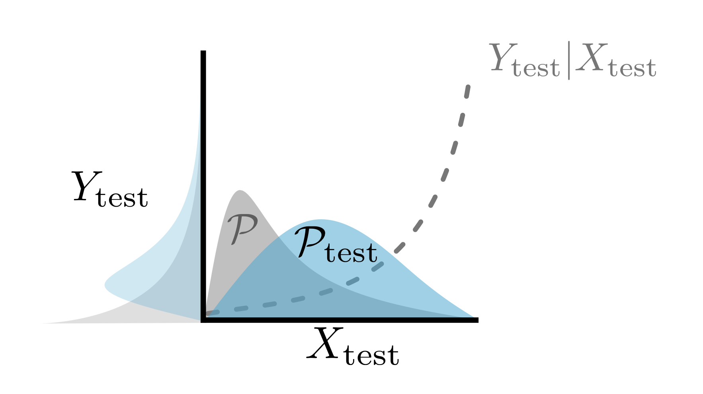

Introduction: When the i.i.d. Assumption Fails
지금까지 우리가 배운 모든 Conformal Prediction(CP) 방법론은 하나의 강력한 가정에 의존하고 있습니다. 바로 “테스트 데이터가 Calibration 데이터와 동일한 분포(i.i.d.)에서 왔다”는 가정입니다.
하지만 현실은 그렇지 않습니다. 과거의 데이터가 미래를 완벽하게 대변하지 못하는 경우가 많습니다. * 의료 진단: 학습 데이터는 성인과 유아의 비율이 50:50이었는데, 실제 병원에는 성인이 95% 방문할 수 있습니다. * 자율 주행: 아침(밝음)에 데이터를 수집하여 학습했는데, 실제 주행은 오후(어두움)에 이루어질 수 있습니다.
이러한 분포의 변화 중 Covariate Shift는 입력 변수 \(X\)의 분포 \(P(X)\)는 바뀌지만, 입력과 출력 사이의 관계 \(P(Y|X)\)는 유지되는 상황을 말합니다. 이번 포스트에서는 Weighted Conformal Prediction을 사용하여 이러한 변화 속에서도 커버리지를 보장하는 방법을 알아봅니다.
Problem Formulation: Covariate Shift
우리의 상황을 수식으로 정의해봅시다. * Calibration Data: \(P\) 분포에서 추출됨. * Test Data: \(\mathcal{P}_{test}\) 분포에서 추출됨.
\[ X \sim P \quad \rightarrow \quad X_{test} \sim \mathcal{P}_{test} \]
단, \(Y|X\) (입력이 주어졌을 때 정답의 분포)는 변하지 않는다고 가정합니다. 이를 Covariate Shift라고 합니다.
이 상황에서 기존의 일반적인 CP를 사용하면 커버리지가 깨질 수 있습니다. 예를 들어, 모델이 어려워하는 데이터(유아)가 테스트 셋에 더 많이 등장한다면, 에러율은 우리가 설정한 \(\alpha\)보다 훨씬 높아질 것입니다.
The Solution: Weighted Conformal Prediction
해결책의 핵심은 “테스트 분포 \(\mathcal{P}_{test}\)에서 더 자주 등장할 것 같은 데이터에 더 큰 가중치(Weight)를 주는 것”입니다.
Step 1: Likelihood Ratio Calculation
먼저, 두 분포 사이의 비율(Likelihood Ratio)을 계산하는 함수 \(w(x)\)를 정의합니다.
\[ w(x) = \frac{d\mathcal{P}_{test}(x)}{dP(x)} \]
- \(w(x) > 1\): 해당 샘플 \(x\)는 학습 때보다 테스트 때 더 자주 등장합니다 (중요함).
- \(w(x) < 1\): 해당 샘플 \(x\)는 테스트 때 덜 등장합니다 (덜 중요함).
Step 2: Compute Normalized Weights
새로운 테스트 포인트 \(x\)가 들어왔을 때, 이 \(x\)와 기존 Calibration 데이터 \(X_i\)들에게 부여할 확률 질량(Probability Mass)을 재계산합니다.
\[ p_i^w(x) = \frac{w(X_i)}{\sum_{j=1}^{n} w(X_j) + w(x)} \]
\[ p_{test}^w(x) = \frac{w(x)}{\sum_{j=1}^{n} w(X_j) + w(x)} \]
- 기존 CP에서는 모든 데이터가 \(\frac{1}{n+1}\)의 동등한 확률을 가졌습니다.
- Weighted CP에서는 \(w(\cdot)\)에 비례하여 확률을 다르게 배정합니다. 테스트 분포와 유사한 데이터일수록 \(p_i\)가 커집니다.
Step 3: Weighted Quantile Calculation
이제 가장 중요한 단계인 Quantile 계산입니다. 기존에는 단순히 점수를 정렬하고 \((1-\alpha)\) 지점을 찾았지만, 이제는 가중치가 반영된 누적 분포(Weighted CDF)를 사용해야 합니다.
\[ \hat{q}(x) = \inf \left\{ s_j : \sum_{i=1}^{j} p_i^w(x) \mathbb{I}\{s_i \le s_j\} \ge 1-\alpha \right\} \]
(여기서 \(s_j\)는 오름차순으로 정렬된 Calibration Score라고 가정합니다.)
- 즉, 가중치 \(p_i^w(x)\)들을 순서대로 더해가다가, 그 합이 \(1-\alpha\)를 넘기는 순간의 점수를 \(\hat{q}(x)\)로 선택합니다.
Intuition: How Quantile Changes
이 과정이 직관적으로 어떤 의미를 가질까요?

Shift towards Hard Examples: 만약 테스트 분포가 모델이 어려워하는(Score가 높은) 데이터들 쪽으로 이동했다면, 높은 점수를 가진 \(X_i\)들의 가중치 \(w(X_i)\)가 커집니다. \(\rightarrow\) CDF 그래프에서 오른쪽 부분의 경사가 가파라집니다. \(\rightarrow\) \(1-\alpha\) 지점에 도달하기 위해 더 많은 점수를 지나야 하거나, 더 높은 점수에서 도달하게 됩니다. \(\rightarrow\) \(\hat{q}\)가 증가합니다 (더 보수적인, 넓은 예측 집합 생성).
Shift towards Easy Examples: 반대로 테스트 분포가 쉬운 데이터들 위주라면, 낮은 점수들의 가중치가 커집니다. \(\rightarrow\) \(\hat{q}\)가 감소합니다 (더 좁고 효율적인 예측 집합 생성).
Theorem & Guarantee
Tibshirani et al. (2019)에 의해 제안된 이 방법은 다음 정리에 의해 커버리지를 보장합니다.
Theorem 3 (Conformal prediction under covariate shift)
데이터가 위에서 정의한 Covariate Shift 가정하에 생성되었다면, Weighted Quantile \(\hat{q}(X_{test})\)를 사용한 예측 집합 \(\mathcal{C}\)는 다음을 만족한다.
\[ \mathbb{P}(Y_{test} \in \mathcal{C}(X_{test})) \ge 1-\alpha \]
Conclusion
Weighted Conformal Prediction은 데이터 분포가 변하는 현실 세계의 문제에 CP를 적용하기 위한 필수적인 도구입니다. 단순히 \(\frac{1}{n+1}\)이라는 고정 관념을 깨고, “테스트 시점에 더 중요한 데이터에 가중치를 준다”는 아이디어를 통해 분포 변화에 유연하게 대처할 수 있습니다.
이 방법은 \(w(x)\)를 정확히 안다면 완벽하게 작동하며, \(w(x)\)를 추정해야 하는 경우에도 꽤 견고한(Robust) 성능을 보여줍니다.
Next Step: 분포가 갑작스럽게 변하는 것(Shift)도 문제지만, 시간이 지남에 따라 서서히 변하는 Drift 현상도 중요합니다. 다음 포스트에서는 시계열 데이터 등에서 발생하는 Section 4.6 Conformal Prediction Under Distribution Drift에 대해 알아보겠습니다.